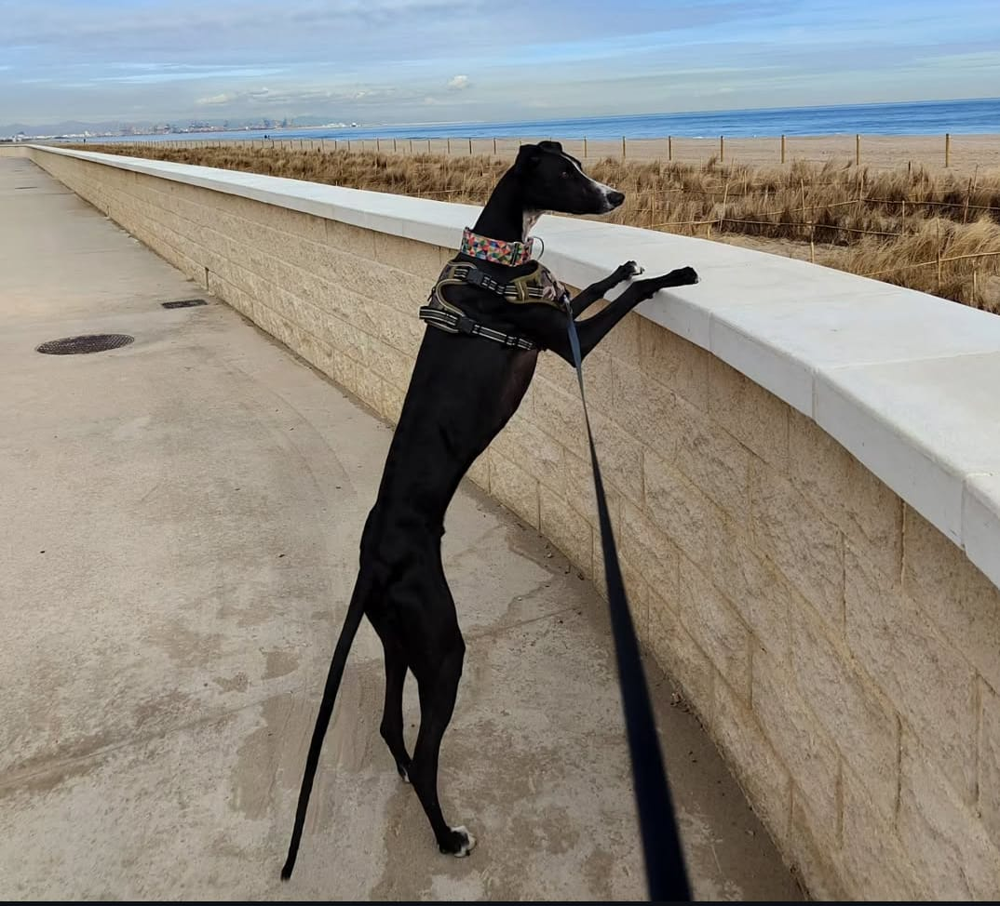

Me llamo Silvia, soy desarrolladora de aplicaciones web con formación previa en Biología. Esta trayectoria científica me ha dotado de una mentalidad analítica, orientada al rigor y a la resolución estructurada de problemas complejos.
Me siento especialmente cómoda trabajando en el backend y bases de datos, donde puedo centrarme en la lógica de negocio, el diseño de APIs REST y la eficiencia de las consultas. Me encanta construir la arquitectura invisible que hace que todo funcione como un mecanismo preciso y escalable.
Desarrollo integral y autónomo de una plataforma interna para el Departamento de Rendimiento Deportivo. Gestión y optimización de métricas médicas y físicas de los jugadores de élite.
Desarrollo Full-Stack de una aplicación web para la monitorización en tiempo real y el control de tránsito de contenedores en instalaciones portuarias logísticas.
Tecnologías y herramientas con las que trabajo en mi día a día para construir software robusto.

Él es Dubi, mi compañero de cuatro patas. Un galgo simpático y muy sociable que me hace compañía en mis sesiones de código.